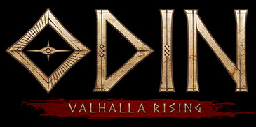
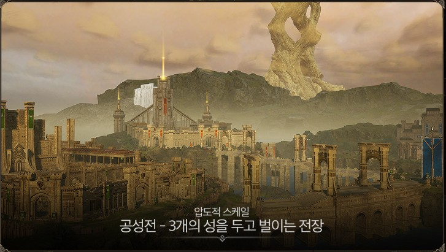
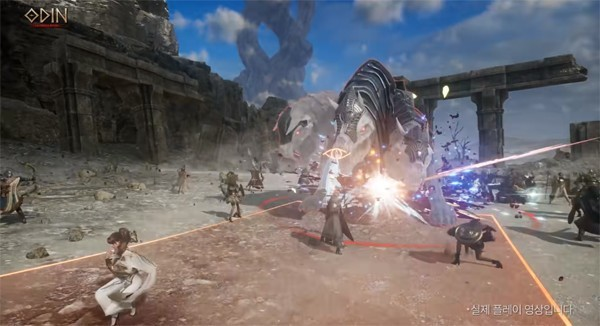
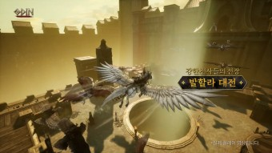

- 공성전

공성전은 3개의 왕좌를 지키고 있는 3개의 성, 그리고 그 성으로 향하는 3개의 다리로 이루어진 전장에 공성/수성 진영의 전사 모두 동시에 모영 진행된다. 모든 전사들이 한자리에 모여 엄청난 규모의 전투는 물론 다수의 공성 진영이 서로 연합하여 공격을 할 수 있다.
- 대규모 보스 레이드

보스레이드는 평상시의 RPG에서 즐길 수 있는 컨텐츠로 여러 유저들이 협동하여 보스와 싸우는 방식이다.
- 발할라 대전

대부분 RPG의 PvP 컨텐츠로 여러 유저들이 참가하여 서로 싸우는 시스템이다.
대전에서 승리했으면 해당 팀원에게 보상 상자 3개,패배했으면 2개가 지급된다. 특정 시간대에만 참여할 수 있으며, 보통 한 판에 5분 정도 소모된다.